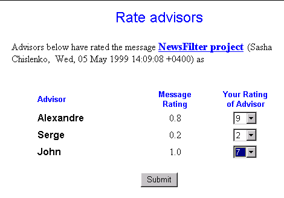

Rate facility
| Rate facility consists of two parts: Message Rate Facility (MRF) and Advisor Rate Facility (ARF). | |
| The idea of MRF is that every message can have different
rating in different fields of interests. This rating is called a named rating. MRF presents a user the same catalog as MSF, but this catalog will be opened at the place in the catalog tree where the current named rating/field of interest is located. So, by default user will be asked to rate the current message for the current field of interest. But still he/she has a possibility of selecting another filed of interest. After selecting an appropriate field of interest a user will be able to rate the message by an integer value from 1 to 10. |
|
 |
The idea of ARF is that every advisor will have different rating in different fields of interests. ARF presents a user a list of advisors who have rated the current message. User will be able to set rating to any number of advisors presented in this list. |